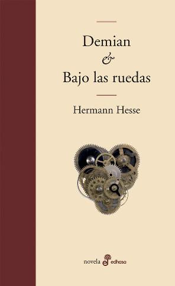

Hermann Hesse
Fue un escritor, poeta, novelista y pintor alemán, naturalizado suizo en 1924. De su obra de cuarenta volúmenes entre novelas, relatos, poemarios y meditaciones, se han vendido más de 30 millones de ejemplares, de los cuales solo una quinta parte corresponde a ediciones en alemán. Además, publicó títulos de autores, antiguos y modernos, así como monografías, antologías y varias revista,recibió el Premio Nobel de Literatura en 1946, como reconocimiento a su trayectoria literaria.
Un poco sobre él
Hermann Hesse fue un buscador durante toda su vida. Lo demuestra no sólo su gran obra poética, que en 1946 le hizo merecedor del Premio Nobel, sino también su biografía. En Calw, su ciudad natal, donde vino al mundo el 2 de julio de 1877, Hesse pasó sus años de juventud en el ambiente de la familia, que le marcaron y que se reflejan en muchos pasajes de sus libros. Maulbronn, Tubingia y Basilea fueron ciudades donde pasó otras etapas de su vida. En 1904 se trasladó a una granja en Gaienhofen, junto al lago de Costanza, para seguir viviendo allí como escritor autónomo. En 1911 realizó un viaje a la India y poco después se trasladó a Suiza, primero a Berna y después, en 1919, a Montagnola (Tessin), donde inició su periodo creativo más rico y donde murió en 1962. La superación de las crisis personales es uno de los puntos focales en la obra de Hesse, que también trata cuestiones de la religión y la política.
Lobo estepario
El lobo estepario (1927) es una de las obras más populares de Hermann Hesse.

Demian
La obra fue publicada por primera vez en 1919, en los tiempos que siguieron a la Gran Guerra.

Bajo la rueda
Bajo las ruedas es la segunda novela del Premio Nobel escrita por él alemán Herman Hesse, publicada en 1906.
